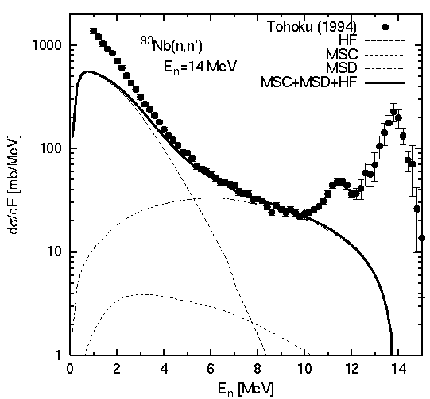

set terminal postscript eps enhanced
set size 0.6,0.8
set output "spectra.eps"
set linestyle 1 lt 1 pt 7 ps 1.0
set linestyle 2 lt 2 lw 1
set linestyle 3 lt 3 lw 1
set linestyle 4 lt 6 lw 1
set linestyle 5 lt 1 lw 3
set xlabel "E_n [MeV]"
set ylabel "d{/Symbol s}/dE [mb/MeV]"
set logscale y
set xtics 0,2
set mxtics 2
set xrange [ 0 : 15 ]
set yrange [ 1 : 2000 ]
set label 1 "^{93}Nb(n,n')" at 3,1000
set label 2 "E_n=14 MeV" at 4,600
plot "spectra.exp" using 1:3:4 notitle with yerrorbars linestyle 1,\
"spectra.exp" using 1:3 title "Tohoku (1994)" with points linestyle 1,\
"spectra.cal" using 1:2 title "HF" with lines linestyle 2,\
"spectra.cal" using 1:4 title "MSC" with lines linestyle 3,\
"spectra.cal" using 1:6 title "MSD" with lines linestyle 4,\
"spectra.cal" using 1:8 title "MSC+MSD+HF" with lines linestyle 5
pause -1
